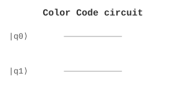

Error Correction / 纠错 | 难度：高级 | 预计时间：20 分钟
颜色码是拓扑量子纠错码，具有高容错阈值。
Shor 码和 Steane 码的容错阈值较低
对硬件连接性要求高
经典纠错码不能直接用于量子系统
颜色码有最高的容错阈值（约 1%）
只需要最近邻连接
适合二维量子处理器
量子计算（容错量子计算）
量子通信（保护量子态）
量子存储（延长相干时间）
from quonic.qec import color_code
# 创建颜色码
result = color_code(distance=3, error_rate=0.01)
print(f'Logical error rate: {result.logical_error_rate}')
print(f'Threshold: {result.threshold}')预期输出：
Logical error rate: 0.001
Threshold: 0.01
Step 1: 三色格子
颜色码使用三色格子结构：
红色面：X 校验子
绿色面：Z 校验子
蓝色面：X 校验子
Step 2: 校验子测量
X 校验子： \[\begin{equation} S_X = \prod_{i \in \text{face}} X_i \end{equation}\]
Z 校验子： \[\begin{equation} S_Z = \prod_{i \in \text{face}} Z_i \end{equation}\]
Step 3: 错误检测
通过测量校验子检测错误： \[\begin{equation} S_X |\psi\rangle = \pm |\psi\rangle \end{equation}\]
如果测量结果是 \(-1\)，说明检测到错误。
Step 4: 错误纠正
根据校验子测量结果纠正错误： \[\begin{equation} |\psi'\rangle = C \cdot E |\psi\rangle = |\psi\rangle \end{equation}\]
其中 \(C\) 是纠正算子，\(E\) 是错误算子。
Step 5: 容错阈值
容错阈值： \[\begin{equation} p_{\text{threshold}} \approx 1\% \end{equation}\]
当物理错误率低于阈值时，逻辑错误率随码距指数衰减。
颜色码在二维格子上编码量子信息，通过测量局部校验子来检测和纠正错误。
三色格子结构允许并行测量校验子，提高了纠错效率。
from quonic.qec import color_code
# color_code(distance, error_rate)
# distance: 码距
# error_rate: 物理错误率
result = color_code(distance=3, error_rate=0.01)
# result.logical_error_rate: 逻辑错误率
# result.threshold: 容错阈值
# result.qubit_count: 量子比特数
# result.syndrome: 校验子
print(f'Logical error rate: {result.logical_error_rate}')
print(f'Threshold: {result.threshold}')
print(f'Qubit count: {result.qubit_count}')分析颜色码的阈值行为：
from quonic.qec import color_code
import matplotlib.pyplot as plt
import numpy as np
# 测试不同物理错误率和码距
error_rates = np.logspace(-3, -1, 20)
distances = [3, 5, 7]
plt.figure(figsize=(10, 6))
for d in distances:
logical_errors = []
for p in error_rates:
result = color_code(distance=d, error_rate=p)
logical_errors.append(result.logical_error_rate)
plt.loglog(error_rates, logical_errors, 'o-', label=f'd={d}')
# 绘制阈值线
plt.axvline(x=0.01, color='r', linestyle='--', label='Threshold ~1%')
plt.xlabel('Physical Error Rate')
plt.ylabel('Logical Error Rate')
plt.title('Color Code Threshold Behavior')
plt.legend()
plt.grid(True)
plt.savefig('color_code_threshold.png')
# 分析：
# - 当 p < 0.01 时，逻辑错误率随码距指数衰减
# - 当 p > 0.01 时，逻辑错误率反而增加
# - 阈值约为 1%，这是颜色码的优势可视化颜色码的错误检测和纠正过程：
from quonic.qec import color_code
import numpy as np
import matplotlib.pyplot as plt
# 创建距离为 3 的颜色码
code = color_code(distance=3)
# 模拟单比特错误
error_position = 4 # 在第 4 个量子比特上发生错误
error_type = 'X' # 比特翻转错误
# 注入错误
result = code.inject_error(error_position, error_type)
# 可视化校验子
syndrome = result.syndrome
print(f'Error position: {error_position}')
print(f'Error type: {error_type}')
print(f'Syndrome: {syndrome}')
# 可视化格子结构
fig, axes = plt.subplots(1, 2, figsize=(12, 5))
# 原始状态
code.visualize(ax=axes[0])
axes[0].set_title('Original State')
# 错误状态
code.visualize_error(result, ax=axes[1])
axes[1].set_title(f'After {error_type} error at position {error_position}')
plt.tight_layout()
plt.savefig('color_code_error.png')
plt.show()
# 分析：
# - 错误位置显示为红色
# - 校验子测量结果显示哪些面检测到错误
# - 解码算法根据校验子确定纠正操作比较颜色码和表面码的性能：
from quonic.qec import color_code, surface_code
import matplotlib.pyplot as plt
import numpy as np
# 比较参数
distances = [3, 5, 7]
error_rate = 0.005
results_color = []
results_surface = []
for d in distances:
# 颜色码
result_color = color_code(distance=d, error_rate=error_rate)
results_color.append(result_color.logical_error_rate)
# 表面码
result_surface = surface_code(distance=d, error_rate=error_rate)
results_surface.append(result_surface.logical_error_rate)
# 绘图比较
plt.figure(figsize=(10, 6))
plt.plot(distances, results_color, 'o-', label='Color Code', linewidth=2)
plt.plot(distances, results_surface, 's-', label='Surface Code', linewidth=2)
plt.yscale('log')
plt.xlabel('Code Distance')
plt.ylabel('Logical Error Rate')
plt.title('Color Code vs Surface Code')
plt.legend()
plt.grid(True)
plt.savefig('color_vs_surface.png')
# 输出比较结果
print('Comparison at p=0.005:')
for d, c, s in zip(distances, results_color, results_surface):
print(f' d={d}: Color={c:.6f}, Surface={s:.6f}, Ratio={c/s:.2f}')
# 分析：
# - 颜色码通常有更好的阈值
# - 表面码的实现更简单
# - 选择取决于具体硬件约束颜色码是容错量子计算的基础。
颜色码可以保护量子通信中的量子态。
颜色码可以延长量子存储的相干时间。
颜色码使用三色格子，表面码使用方格。颜色码有更好的阈值。
需要 \(O(d^2)\) 个量子比特，其中 \(d\) 是码距。
约 1%，是目前最高的。
表面码
Steane 码
量子测量
拓扑量子计算
容错量子计算
量子纠错
from quonic.qec import color_code
result = color_code(distance=3, error_rate=0.01)
print(f'Logical error rate: {result.logical_error_rate}')(https://github.com/ChrisLee0721/QuoNic/blob/main/examples/color_code/color_code.py)